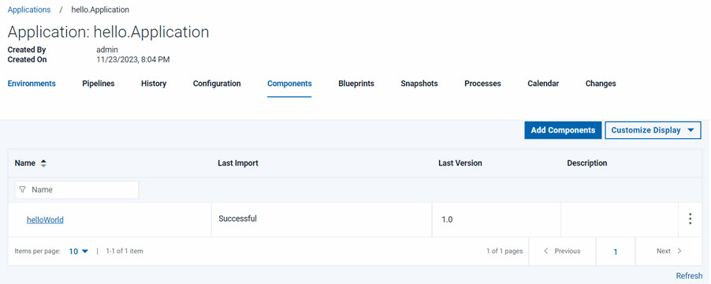

Applications manage components, typically by deploying
them into environments.
About this task
To create an application, you identify the components that it manages; define at least one
environment into which the components are deployed; and create a process to do the work. An
environment maps components to agents and handles inventory, among other things. An application
process is similar to but not identical to a component process. Application processes are primarily
intended to direct underlying component processes and orchestrate multi-component deployments. In
this lesson, you create an application and assign the helloWorld component to it.
Procedure
-
Click the Applications tab, and then click Create
Application.
- Name the new application something like hello
Application.
-
Accept the default values for the other fields, and click Create.
For the tutorial, the default value for the
Notification Scheme is
fine.
IBM DevOps Deploy (Deploy)
integrates with LDAP and email servers, which enables the product to send
event-based notifications. For example, the
default notification
scheme sends an email (if an email server is configured, see
System settings) when a
deployment finishes. Notifications can also play a role in deployment approvals.
See
Managing Security for
information about security roles.
- Add the helloWorld component to the application:
-
From the Application: hello Application page, click the
Components tab. This is the Components tab that is
associated with the application, not the Components tab at the top of the
page.
-
Click Add Component.
-
In the Add a Component window, select the
helloWorld component, and then click Save.
An application can deploy only components that are added to it.
Results
The application includes the helloWorld component, as shown in the following figure.
Applications can have any number of components, and components can be included in any number of
applications.

In this lesson, you created an application and assigned the helloWorld component to it.
On the Components tab, you have the component that is managed by the
application listed.
What to do next
For more information about creating applications, see Creating applications.